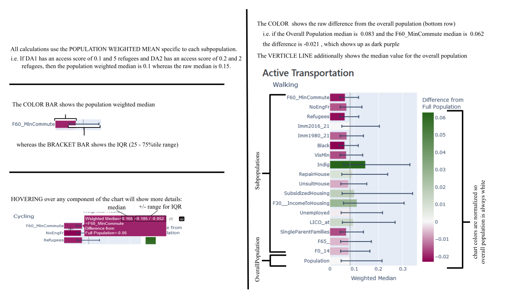

Population Weighted Median Access Scores by Subpopulation - City of Toronto
The following charts are organized by destination and show the weighted median access score for each subpopulation and transportation type.
The data uses the Toronto normalized version of the spatial access measures, meaning that the DA with the highest score in Toronto has a value of 1, and the DA with the lowest score in Toronto has a value of 0.
The below diagram shows an example of how to read each chart.
